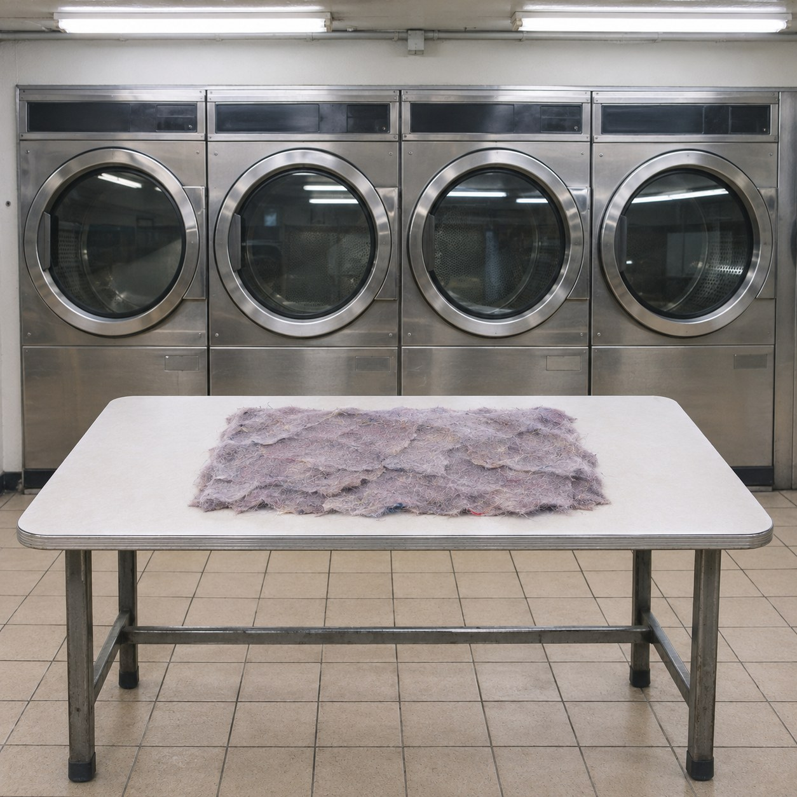
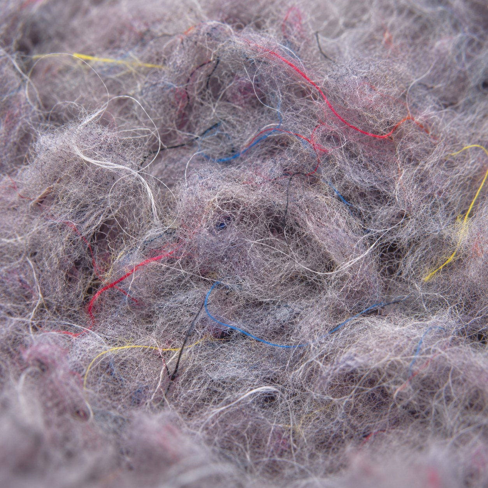

Everyone's Grey


Every time a shirt is washed and dried, a little of it leaves. Not a thread you could pull, but a fine dust of it, too small to see going. The dryer catches it in a filter, a soft grey skin that is peeled off and thrown away after every load.
This is everything the dryers of one laundrette caught in one day, from opening to closing, laid edge to edge into a single sheet. Perhaps forty loads. Work shirts, school jumpers, bedsheets, a baby's socks, someone's best coat.
Look closely and it is full of colour. A red fibre, a blue one, yellow, black, white. Step back and all of it is the same quiet grey with a little lilac in it. That is the colour of everyone. Not a mix anyone chose, only what happens when many colours are worn down far enough to touch.
The people whose clothes made it never met. They sat on the same plastic chairs at different hours, read the same notices and went home. Their sleeves met here after they had gone, more closely than any of them ever would.
Lucretius noticed that a ring grows thin on the finger over the years, that paving is worn down by the feet of crowds, and that the right hands of bronze statues by the city gates were worn away by people touching them in greeting as they passed. We can see that something has gone, he wrote, but nature hides from us the moment of its going. Wear is a loss that only ever shows as a total.
So every coat is slowly on its way here. Not torn, not thrown out, only carried off a little each week, until part of it has become everyone's grey.